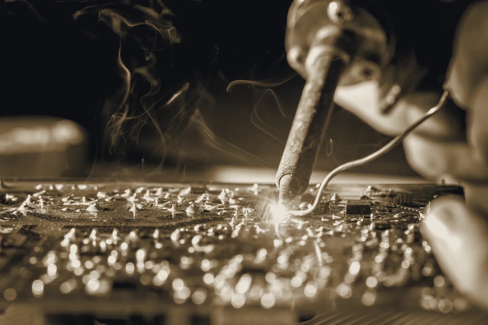

The workshop
Forty a month,
by four pairs of hands.
Two rooms above a joinery. One of them smells of solder and the other of oak. Everything we sell is built, tested and boxed between them, which is the only reason a company this size can answer the phone.

Hand-stuffed boardsEvery one tested twice
How one gets made
Eleven working days from bare board to boxed, most of which is waiting for oak to settle.
- Day one
- Bare boards in. Every one gets a continuity check before a part goes on.
- Days two to four
- Through-hole by hand. The whole analogue path is through-hole, because it is repairable in twenty years.
- Day five
- First power-up on a current-limited supply. About one board in thirty argues.
- Days six to nine
- Panels anodised off site. Oak cheeks cut, sanded and oiled here, then left to settle.
- Day ten
- Calibration: oscillator tracking across five octaves, filter self-oscillation, envelope times against a scope.
- Day eleven
- Two hours of burn-in on a fixed pattern, then boxed with its own signed test sheet.
What we will not do
No glued cases,
no secret parts.
Every instrument opens with six screws and an ordinary driver. The schematic for each one is published the week it ships, and we hold boards in stock for as long as the parts exist.
We would rather sell you one instrument that outlives us than four that do not. It is a worse business and a better bench.
Service and schematicsBurn-in, day elevenTwo hours, fixed pattern